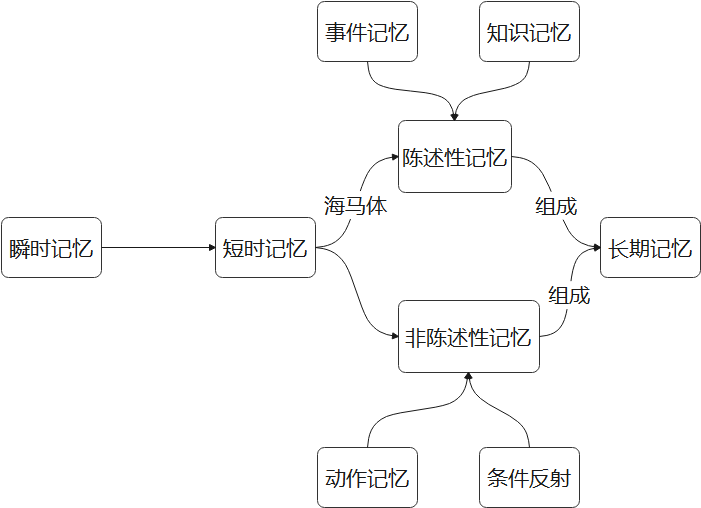

Learn
前言
高效地学习需要高效的方法
先贴上大佬的《劝学》
君子曰：学不可以已。
青，取之于蓝，而青于蓝；冰，水为之，而寒于水。木直中绳，輮以为轮，其曲中规。虽有槁暴，不复挺者，輮使之然也。故木受绳则直，金就砺则利，君子博学而日参省乎己，则知明而行无过矣。
故不登高山，不知天之高也；不临深溪，不知地之厚也；不闻先王之遗言，不知学问之大也。干、越、夷、貉之子，生而同声，长而异俗，教使之然也。诗曰：“嗟尔君子，无恒安息。靖共尔位，好是正直。神之听之，介尔景福。”神莫大于化道，福莫长于无祸。
吾尝终日而思矣，不如须臾之所学也；吾尝跂而望矣，不如登高之博见也。登高而招，臂非加长也，而见者远；顺风而呼，声非加疾也，而闻者彰。假舆马者，非利足也，而致千里；假舟楫者，非能水也，而绝江河。君子生非异也，善假于物也。
南方有鸟焉，名曰蒙鸠，以羽为巢，而编之以发，系之苇苕，风至苕折，卵破子死。巢非不完也，所系者然也。西方有木焉，名曰射干，茎长四寸，生于高山之上，而临百仞之渊，木茎非能长也，所立者然也。蓬生麻中，不扶而直；白沙在涅，与之俱黑。兰槐之根是为芷，其渐之滫，君子不近，庶人不服。其质非不美也，所渐者然也。故君子居必择乡，游必就士，所以防邪辟而近中正也。
物类之起，必有所始。荣辱之来，必象其德。肉腐出虫，鱼枯生蠹。怠慢忘身，祸灾乃作。强自取柱，柔自取束。邪秽在身，怨之所构。施薪若一，火就燥也，平地若一，水就湿也。草木畴生，禽兽群焉，物各从其类也。是故质的张，而弓矢至焉；林木茂，而斧斤至焉；树成荫，而众鸟息焉。醯酸，而蜹聚焉。故言有招祸也，行有招辱也，君子慎其所立乎！
积土成山，风雨兴焉；积水成渊，蛟龙生焉；积善成德，而神明自得，圣心备焉。故不积跬步，无以至千里；不积小流，无以成江海。骐骥一跃，不能十步；驽马十驾，功在不舍。锲而舍之，朽木不折；锲而不舍，金石可镂。蚓无爪牙之利，筋骨之强，上食埃土，下饮黄泉，用心一也。蟹六跪而二螯，非蛇鳝之穴无可寄托者，用心躁也。(江海 一作：江河)
是故无冥冥之志者，无昭昭之明；无惛惛之事者，无赫赫之功。行衢道者不至，事两君者不容。目不能两视而明，耳不能两听而聪。螣蛇无足而飞，鼫鼠五技而穷。《诗》曰：“尸鸠在桑，其子七兮。淑人君子，其仪一兮。其仪一兮，心如结兮！”故君子结于一也。
昔者瓠巴鼓瑟，而流鱼出听；伯牙鼓琴，而六马仰秣。故声无小而不闻，行无隐而不形 。玉在山而草木润，渊生珠而崖不枯。为善不积邪？安有不闻者乎？
学恶乎始？恶乎终？曰：其数则始乎诵经，终乎读礼；其义则始乎为士，终乎为圣人， 真积力久则入，学至乎没而后止也。故学数有终，若其义则不可须臾舍也。为之，人也；舍 之，禽兽也。故书者，政事之纪也；诗者，中声之所止也；礼者，法之大分，类之纲纪也。 故学至乎礼而止矣。夫是之谓道德之极。礼之敬文也，乐之中和也，诗书之博也，春秋之微 也，在天地之间者毕矣。
君子之学也，入乎耳，箸乎心，布乎四体，形乎动静。端而言，蝡而动，一可以为法则。小人之学也，入乎耳，出乎口；口耳之间，则四寸耳，曷足以美七尺之躯哉！古之学者为己，今之学者为人。君子之学也，以美其身；小人之学也，以为禽犊。故不问而告谓之傲，问一而告二谓之囋。傲、非也，囋、非也；君子如向矣。
学莫便乎近其人。礼乐法而不说，诗书故而不切，春秋约而不速。方其人之习君子之说，则尊以遍矣，周于世矣。故曰：学莫便乎近其人。学之经莫速乎好其人，隆礼次之。上不能好其人，下不能隆礼，安特将学杂识志，顺诗书而已耳。则末世穷年，不免为陋儒而已。将原先王，本仁义，则礼正其经纬蹊径也。若挈裘领，诎五指而顿之，顺者不可胜数也。不道礼宪，以诗书为之，譬之犹以指测河也，以戈舂黍也，以锥餐壶也，不可以得之矣。故隆礼，虽未明，法士也；不隆礼，虽察辩，散儒也。
问楛者，勿告也；告楛者，勿问也；说楛者，勿听也。有争气者，勿与辩也。故必由其道至，然后接之；非其道则避之。故礼恭，而后可与言道之方；辞顺，而后可与言道之理；色从而后可与言道之致。故未可与言而言，谓之傲；可与言而不言，谓之隐；不观气色而言，谓瞽。故君子不傲、不隐、不瞽，谨顺其身。诗曰：“匪交匪舒，天子所予。”此之谓也。
百发失一，不足谓善射；千里蹞步不至，不足谓善御；伦类不通，仁义不一，不足谓善学。学也者，固学一之也。一出焉，一入焉，涂巷之人也；其善者少，不善者多，桀纣盗跖也；全之尽之，然后学者也。
君子知夫不全不粹之不足以为美也，故诵数以贯之，思索以通之，为其人以处之，除其害者以持养之。使目非是无欲见也，使耳非是无欲闻也，使口非是无欲言也，使心非是无欲虑也。及至其致好之也，目好之五色，耳好之五声，口好之五味，心利之有天下。是故权利不能倾也，群众不能移也，天下不能荡也。生乎由是，死乎由是，夫是之谓德操。德操然后能定，能定然后能应。能定能应，夫是之谓成人。天见其明，地见其光，君子贵其全也。
——先秦·荀子《劝学》
学习
主观方面的方法也要遵循生物的规律
先上 链接
本质：获取新信息和新知识的神经过程
- 非联合学习：习惯化和敏感化
- 联合学习：经典条件反射和操作式条件反射
记忆
本质：对获取信息的编码、巩固、保存和读出的神经过程
总结
本质
沉淀：人类文明是其历史的沉淀，人是其过去的沉淀
进化：减少不利思维、行为的权重
前提
环境的影响：模仿、竞争、启迪（良好的身心状态）
心理的稳定：自制、自驱、自信（提取信息需要主观的专注）
方法
继承：终日而思不如须臾所学，跂而望矣不如登高博见
巩固：不积跬步无以至千里，不积小流无以成江海
压力：不登高山，不知天之高；不临深溪，不知地之厚
分类整理、形象联系记忆